GAMES 101 L10-Geometry 1 + L11-Geometry 2 + L12-Geometry 3 (implicit/explicit geometry + shadow mapping)
Implicit representation of geometry
Based on classifying points. Describe geometry with relationships or conditions without providing the exact set of points.
Points satisfy some specified relationship.
E.g. sphere: all points in 3D, where
More generally, f(x,y,z) = 0
- Sampling can be hard
- Inside / outside can be easy
More implicit representations
- Algebraic Surfaces
Surface is zero set of a polynomial in x, y, z. - Constructive Solid Geometry (构造实体几何)
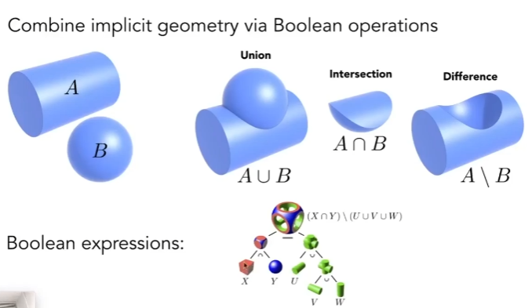 - Distance function
Instead of Booleans, gradually blend surfaces together using distance functions (giving minimum distance (could be signed distance -> SDF) from anywhere to object). To restore the original geometry, just figure out the positions where SDF == 0. - Level Set (水平集) Methods
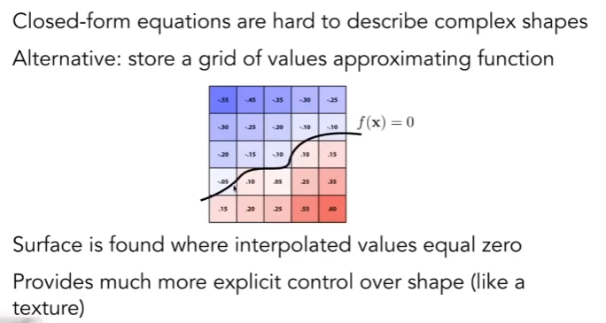
(think of contour lines 等高线) - Fractals (分型)
- Exhibit self-similarity, detail at all scales (recursively)
- “Language” for describing natural phenomena
- Hard to control shape!
Pros:
- compact description (e.g., a function) saves memory
- certain queries easy (inside object, distance to surface)
- good for ray-to-surface intersection
- for simple shapes, exact description / no sampling error
- easy to handle changes in topology (e.g., fluid)
Explicit representation of geometry
All points are given directly or via parameter mapping (generally, )
- Sampling is easy (just plug in (u, v) to get the point (x, y, z))
- Inside / outside can be hard
More explicit representations
- Polygon meshes
- Store vertices & polygons (often triangles or quads)
- Easier to do processing / simulation, adaptive sampling
- More complicated data structures
- Perhaps most common representation in graphics
- The Wavefront Object File (.obj) Format
- Commonly used in Graphics research
- Just a text file that specifies vertices, normals, texture coordinates and their connectivities
- Bezier surfaces
- subdivision surfaces
- NURBS
- point clouds
- Easiest representation: list of points (x,y,z)
- Easily represent any kind of geometry
- Useful for LARGE datasets (>>1 point/pixel)
- Often converted into polygon mesh
- Difficult to draw in undersampled regions
Bezier Curves
The curve must start at (pass) p0 and end at (pass) p3. The tangent line at p0 passes p1 (the first control point) and the tagent line at p3 passes p2 (the second control point).
de Casteljau Algorithm
Consider given three points to draw a quadratic Bezier (二次贝塞尔). The key is to determine the point the curve passes at each moment t in [0, 1] to form the curve.
First, insert two points in each edge using linear interpolation.
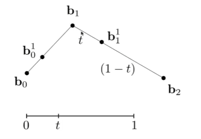
Repeat recursively.
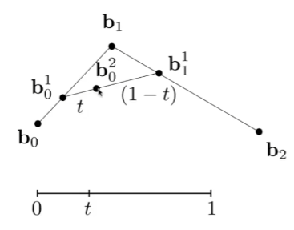
Run the same algorithm for every t in [0, 1].
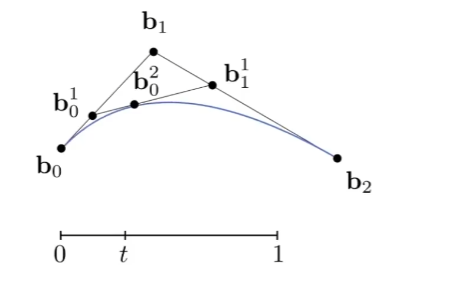
Similarly, given four points to draw a Bezier curve. Each time we decrease the number of edges and points we considered, until there’s only two points and one edge on which we can determine a point at t.
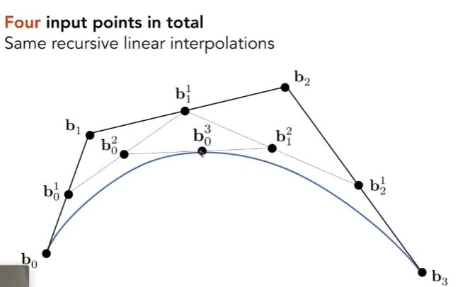
Algebraic Formula
Note:
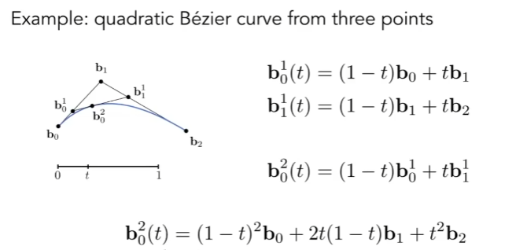
In general, it’s like binomial distribution. This equation also works for 3d points.
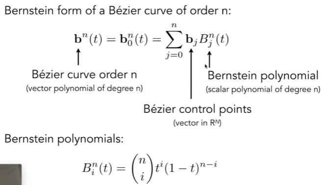
Think of Binomial Probability Mass Function (PMF)
The probability of getting exactly k successes in n trials is given by the formula:
Where:
P(X=k): Probability of k successes in n trials.
: Binomial coefficient, representing the number of ways to choose k successes from n trials.
p: Probability of success.
1−p: Probability of failure.
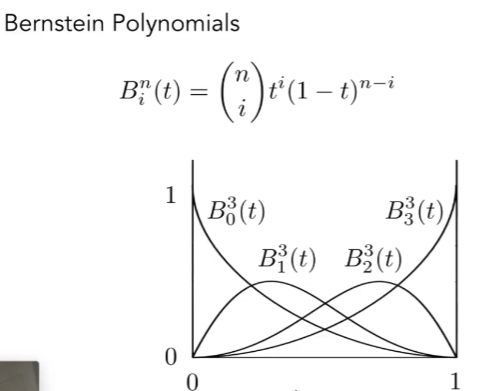
Properties
- Interpolates endpoints
- For cubic Bézier: b(0) = b_0; b(1) = b_3
- Tangent to end segments
- Cubic case: b’(0) = 3(b_1-b_0); b’(1) = 3(b_3-b_2)
- Affine transformation property
- Transform curve by transforming control points
- However, for projection (3d->2d) it’s not invariant.
- Convex hull property
- Curve is within convex hull of control points
Piecewise Bezier Curves
Instead use multiple points to create high-order Bezier curves directly, we chain many low-order Bezier curves. Piecewise cubic Bezier (given four points) curves is most common.
PS: C0 and C1 continuity.
PPS: To review splines, see CS7496 Computer Animation GT.
Bezier Surface
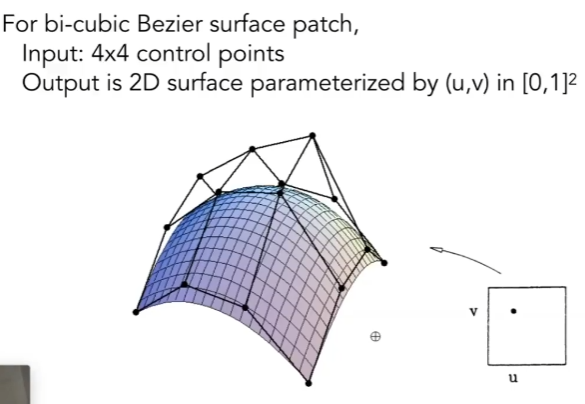
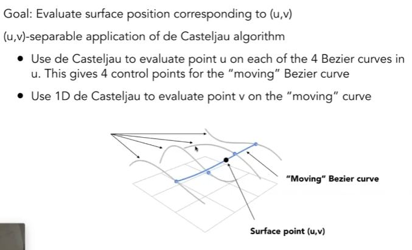
Mesh Operations
- Mesh subdivision (upsampling)
- increase resolution
- Mesh simplification (downsampling)
- decrease resolution
- try to preserve shape / appearance
- Mesh regularization
- modify sample distribution to improve quality
Subdivision
Common subdivision rule for triangle meshes.
- First, create more triangles (vertices)
- Second, tune their positions
Loop subdivision (Loop is the name of the author)
It is based on the idea of recursively refining the mesh by splitting each triangle into smaller triangles and adjusting the positions of the vertices to produce a smoother surface.
Steps in Loop Subdivision:
- Split Each Edge (Edge Split):
For each edge in the mesh, a new vertex (called a “child vertex”) is added at the midpoint of the edge.
This step effectively splits each triangle into four smaller triangles. - Create New Faces:
After splitting the edges, each triangle is divided into four smaller triangles.
The process connects the new midpoints with the old vertices to form the new faces. - Adjust Vertex Positions:
Old (Parent) Vertices:
Existing vertices are repositioned to improve smoothness. Their new positions are computed as a weighted average of their neighboring vertices.
New (Child) Vertices:
The new vertices added at the edge midpoints are also repositioned. Their positions are computed as a weighted average of the two endpoints of the edge and the neighboring vertices of those endpoints.
Catmull-Clark subdivision
This is for general meshes - what if the meshes are not triangles?
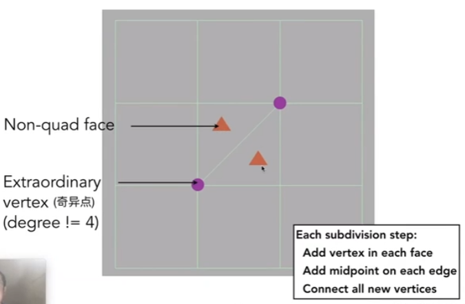
Assume that we have n non-quad faces (非四边形面) and m extrodinary points. See the figure below, after the first division, there are m+n extrodinary points and 0 non-quad faces. This is to say, the first catmull-clark subdivision clear all non-quad faces and increase extrodinary points accordingly. Then in the folloing subdivisions, the number of non-quad faces won’t increase.
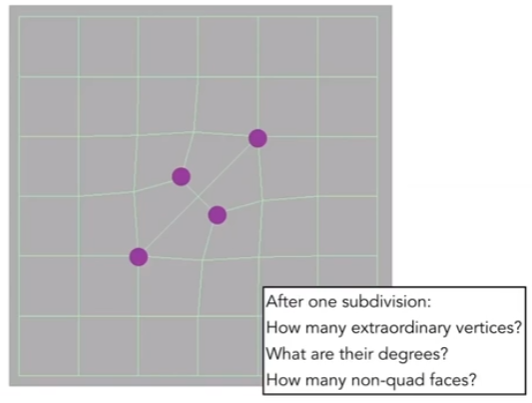
Catmull-Clark update rule.
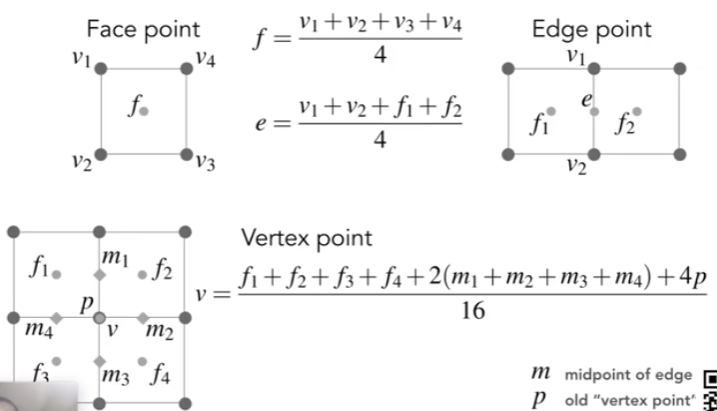
Simplification
edge collapse （边坍缩）
Key idea:
Find the optimal position of the new vertex so that the the quadric error is minimized.
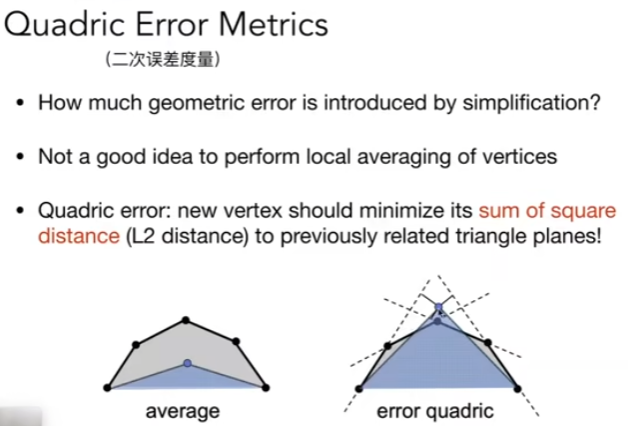
Iteratively collapse edges.
Which edges? Assign score with quadric error metric*
- approximate distance to surface as sum of distances to planes containing triangles
- iteratively collapse edge with smallest score (use heap / priority queue, collapse an edge and update the affected edges accordingly)
- greedy algorithm… great results!
(Garland & Heckbert 1997)
Shadow Mapping
Basics
- An lmage-space Algorithm
- No knowledge of scene’s geometry during shadow computation
- Must deal with aliasing artifacts
- Key idea: the points NOT in shadow must be seen both by the light and by the camera
Steps
- Render from light source
- Record a depth image of the scene from the light source (look at the scene from the light source)
- Render from eye
- record a standard image (with depth) from eye
- Project to light
- Project visible points in eye view back to light source
- After reprojected, if the corresponding depths in the depth image recorded at the light source is the same as the depth recorded at eye, the point is visible.
- After reprojected, if depths from light and eye are not the same. This point is blocked.
Problems with shadow maps
- Hard shadows (point lights only)
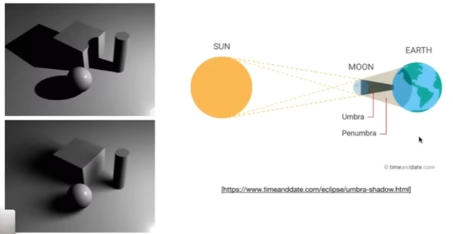
As shown in the figurer, only when the light source has volumn can we get soft shadows. - Quality depends on shadow map resolution(general problem with image-based techniques)
- Involves equality comparison of floating point depthvalues means issues of scale, bias, tolerance